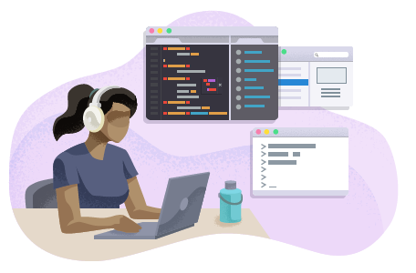

What is a web developer?
Professional web developers, or "Full-stack" web developers
are developers whom focus on both front-end and back-end web devleopment.
Front-end web developers primarially focus on the design within allowing the suer to access
and interact with the site. Meanwhile, back-end developers maintain the mechanisms that
that process data and perform actions on websites.
Salary
Base salary of web developers at Google is 129.9k per year
Average salary of web developers at Google is 190.4k per year.
Sign-up bonus is on average $75k
Performance Bonus on average is 20%
Each raise is adds average $20k per year
What do they do?
Google Web developers design HTML5 ads, images, videos, and other content.
using an intefrated visual and code interface. They also usually have to design the view,
add element support for a multitude of devices and browsers, and animating those elemtns.
The main languages Google Web Developers use are: HTML5, CSS, and JavaScript.

What are the requirements?
Batchelor's degree
(or a equivalent practical experience)
5 Years of experience with software development in one or more progamming languages and with data structures/algorithms
3 Years of experience testing, maintaining, and/or launching software products, and 1 year of experience with software design and architecture
3 Years of experience with front-end frameworks, full-stack development, and / or API development.
How would I get a job at Google?
I would recommend starting development, especially web-development considering it pays as well as Java programmers
despite web development being much easier, due to the high demand.
Web-Development is honestly surprisingly easy to learn and use, and I recommend anyone that is tech-savvy to get into it due to it often being an influence
or motivation to learn more programming languages in the future which opens many career gateways.
Spam Google with your resume and hope you get accepted, or just work at McDonalds, because.. you can.
Pros
Flexxing rights
Some people would be amazed
Some people may want to be your friend
Attention
You can make your own websites
You can freelance with more flexibility
Larger career diversity
People whom made PowerPoints are be jealous that my "PowerPoint" is better than theirs.
You'll be able to make a entire websites for one single project in two days just to flex your ability at just age 13
Cons
People can be nosey
People may critize you despite them lacking experience
Programming isn't as fun as all those "hacker videos" are, in reality it is insanely boring.
Wrapup
Google Web Developers have a harsh time budget usually, and is rather stressful. However, they offer HQs as an work environment which includes 3 meals, ability to bring cats or dogs, massages, and a lot more. The pay is also great especially for something such as web developers.
This took me 752 lines of code, I hope I get a 100 ;)